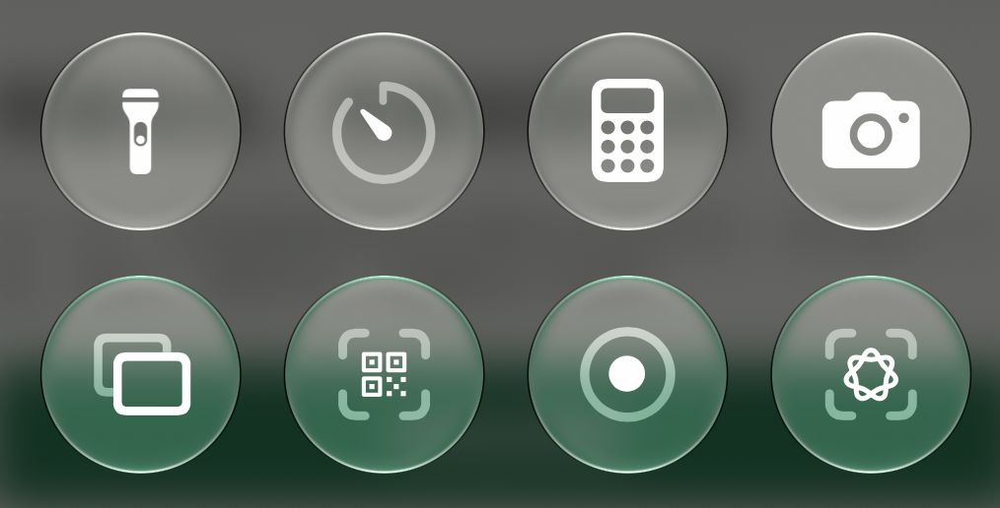
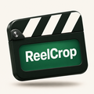
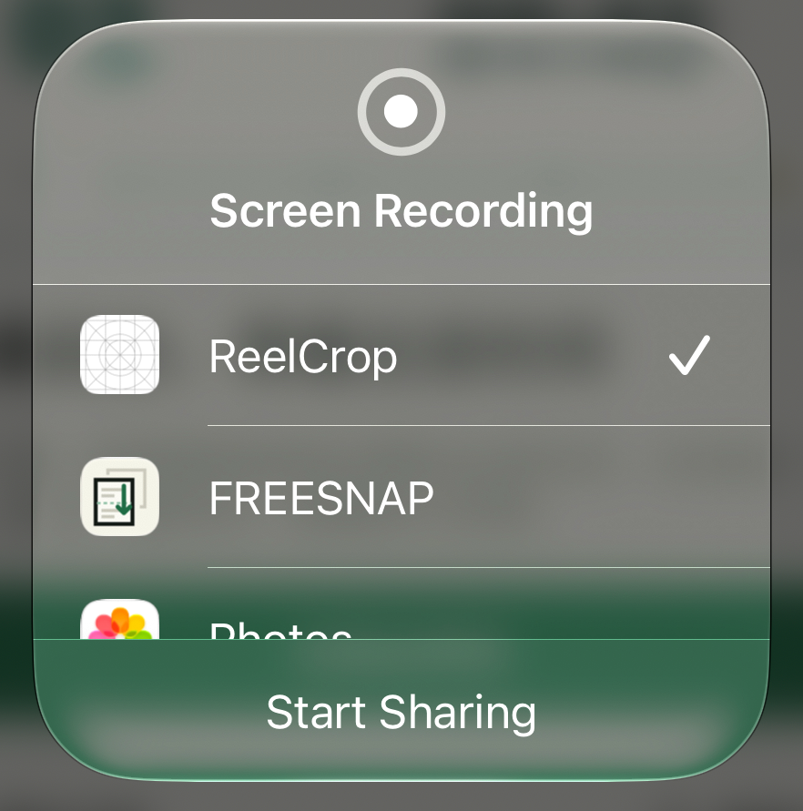
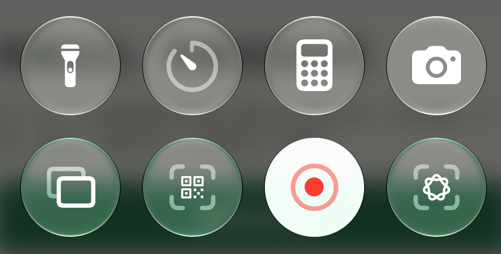
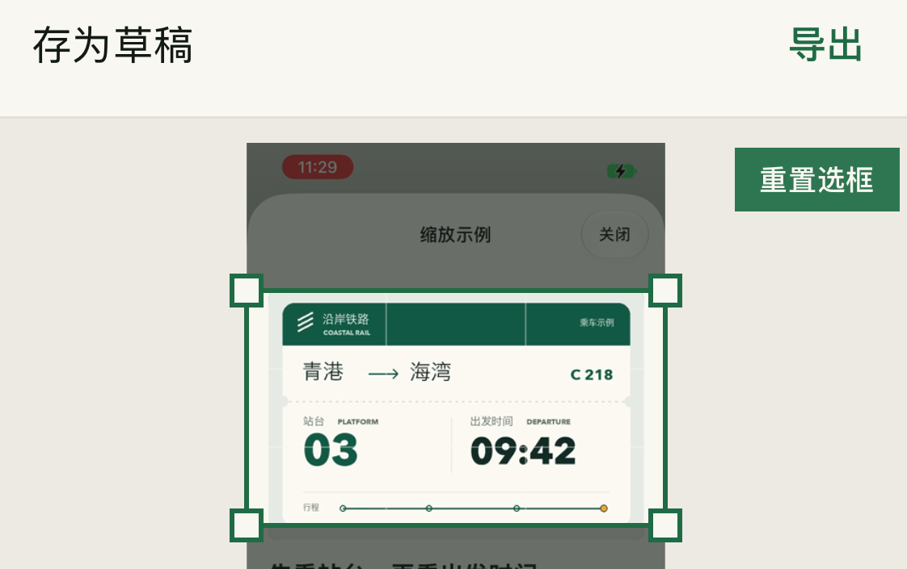
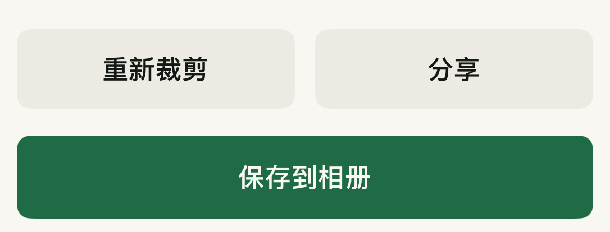

ReelCrop 使用指南
第一次录屏时，先确认系统把画面交给 ReelCrop。结束时留在当前 App 打开控制中心，就能少录一段切换画面。
先打开要录的内容，再打开控制中心。第一次使用时可能需要先添加「屏幕录制」。


2 · 长按，选择 ReelCrop长按录屏按钮，勾选 ReelCrop，再点面板底部的「开始共享」或「开始直播」（图中为 Start Sharing）。在三秒倒计时里收起控制中心。

从当前 App 打开控制中心，轻点红色录屏按钮。如果系统询问，点「停止」。等红点熄灭即可返回 ReelCrop。

调整画面和时长后点「导出」。要在「照片」中查看成品，请再点「保存到相册」。未完成的编辑可从首页「草稿」继续。


常见问题
顶部没有红点，怎样停止？
打开控制中心，轻点红色录屏按钮。已回到 ReelCrop 时，可点「录屏中」右侧按钮，再在系统面板里停止。
录完只在「照片」中找到视频？
开录时可能选中了「照片」。这段视频仍可从 ReelCrop 首页点「导入视频裁剪」打开。下次开录前长按录屏按钮，先勾选 ReelCrop。
录到一分钟就结束了？
免费版每次录制最多 60 秒，Pro 每次最多 30 分钟。已购买可在设置的 Pro 页面恢复购买。
导出后在相册里找不到？
从 ReelCrop 的「已导出」打开成品，点「保存到相册」。若系统已拒绝权限，在 iPhone 设置中允许 ReelCrop 添加照片。
联系支持
使用 ReelCrop 遇到问题，请发邮件至 ctgtech2036@outlook.com。请注明 iPhone 型号、iOS 版本，以及问题出现在录屏、剪辑还是导出时。